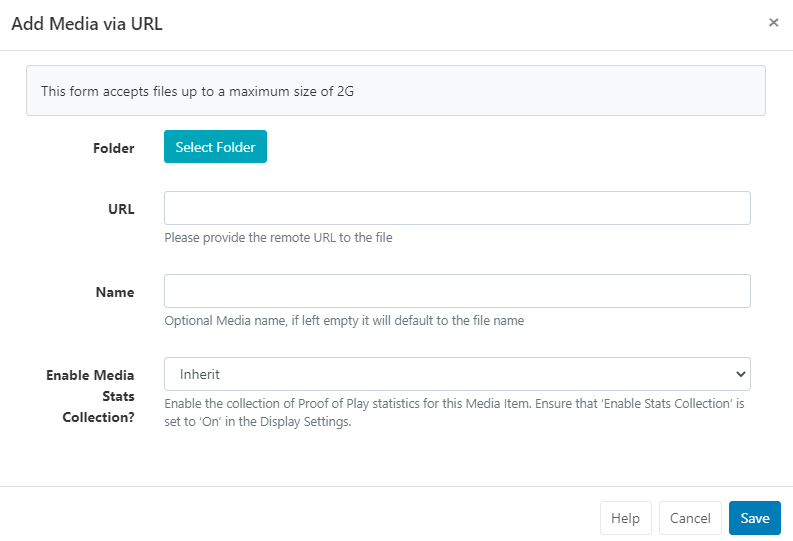
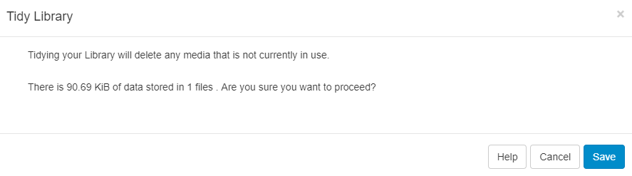

Media Library
BI Square Brand Activation supports a wide variety of media types, from Widgets which are created and stored directly on Layouts and Playlists to file-based media that is uploaded and stored in the CMS Library which can then be reused across multiple Layouts and Playlists.
Manage all file based media by selecting Media under the Library section of the main CMS menu:

Use the multiple filter fields across the top of the grid to restrict criteria for returned results.
Use the OR/AND option for Names and to filter items that have been assigned multiple Tags.
Images and Videos that have a set thumbnail can also be filtered by Orientation once set:
Use the row menu for the item and select Edit for an Image/Video file.
Scroll down to the bottom of the form and set the intended Orientation.
Folders are used to organise, search and easily Share User objects with other Users/User Groups.
- Click on a Folder/sub-folder to search the contents of only the selected Folder and return results based on any filters applied.
or
- Tick All Folders to include searching in the Root Folder and return results based on any filters applied.
Click the Folders menu to toggle on/off from view. When the Folder tree is hidden from view, the file path for the selected folder will be shown!
Adding Library Media
Library media can be either uploaded directly using the Add Media button or by providing a URL using the Add Media (URL) button.
Add Media to the CMS Library and save to Folders to have media ready for use for the appropriate Users/User Groups!
Files added to the CMS Library can be easily added to Layouts and Playlists using a Library Search
Add Media (Upload)
-
Select the Add Media button

-
Click Add files and select the file(s) you wish to upload.
Default thresholds and limits can be specified which are then considered in the event an Image should be resized when uploading an image for example. Further information can be found in CMS Settings.
- Give your file a Name for easier identification in the CMS and optional Tags.
If the Name field is left blank, the file will be named as per the original file name on upload!
Upload files to a specified Folder location to inherit the View, Edit, Delete Share options that have been applied to the destination Folder for easy User/User Group access:
- Click on the Select Folder button and expand to select the Folder to save in.
Users can also right click a Folder to access further options as enabled in the Feature and Sharing options for a User/User Group.
-
Click in the Folder you wish to upload the file to and click Done.
-
The Current Folder will now show the selected file path.
-
Click the Start upload button to begin the upload of all files. If a Folder has been selected and you have added multiple files, all files will be uploaded to that location.
Files can also be uploaded individually and have different Folder locations specified:
-
Instead of clicking on the Start upload button, click on the blue upload button shown at the end of the row for an added file.
-
Change the Folder location using the Select Folder button as before and then click the blue button at the end of the row to upload just that singular file.

- Once all files have been successfully uploaded, click Done.
Media files can also be uploaded directly to Layouts/Playlists using the upload tool from a Library Search. Media uploaded to a Playlist have an additional option to set Widget Expiry Dates.
Media files that are uploaded and added directly to Layouts/Playlists are also saved by default to the CMS Media Library.
Add Media via URL
- Select the Add Media (URL) button:

- Save to a Folder to inherit the View, Edit, Delete Share options that have been applied to the destination Folder for easy User/User Group access.
- Provide the remote URL for the file.
- Give your file a Name for easier identification in the CMS.
If the Name field is left blank, the file will be named as per the original file name!
- Click to Save.
Row Menu
Each item in the Library has a row menu where Users can access a list of actions/shortcuts
Edit
Select Edit to make changes to Folder locations, Durations and Tags and other settings.
- Notable settings are listed below:
Expiry Dates
Set an Expiry Date for Library Media to remove the file from any Layouts/Playlists it has been used on.
Retire Media
Ticking Retire this Media will keep the media file assigned to any existing Layouts/Playlists but will not be made available for further selection to add to Layouts/Playlists.
Enable Media Stats Collection
- Set the collection of Proof of Play statistics to On / Off / Inherit for the selected media file.
Ensure that Enable Stats Reporting has been ticked in Display Settings in order to collect Proof of Play stats!
Update Media
Use the check box Update this Media in all Layouts it is assigned to so that any edits are reflected in Layouts/Playlists that this media file is currently assigned to.
Edits will only be updated in Layouts/Playlists which you have access to edit!
Replace Media
It may be necessary to upload a new revision of an existing file by using the Replace button at the bottom of the form.
- Upload a replacement file using the same steps as before to Add Media (Upload).
- Tick to Update the replacement file to all Layouts/Playlists it is currently assigned to.
- Tick to Delete the old file version completely from the CMS.
Delete
Media files can only be deleted from the CMS if they are not being used on any existing Layouts/Playlists.
Retiring Content rather than deleting it will keep the media file in any existing Layouts/Playlists it has been assigned to, with any scheduled content unaffected. Media will not be available to add to any new Layouts/Playlists.
- Tick in the box to enable a hard push using XMDS to completely remove the file from a Players local storage.
Usage Report
This report is great to use to make final checks prior to tidying media files!
This will show if the selected media file is directly assigned/scheduled to Displays.

- Use the Layout tab to see what Layouts the media file is currently included in.
Use the With Selected option at the bottom of the Library grid to muti-select rows to easily perform bulk actions!
Schedule
Image and Video Library media files can be directly Scheduled to a Display as full screen content from the row menu.
- Click Schedule

- Set the Duration of the item to determine how long this media file should be shown each time it appears in the schedule. Use the duration,as set in the Media Library by leaving this field blank.
- Optionally select a Resolution to use. If left blank a resolution that matches closest in size to the selected media file will be used.
- An optional Background Colour can be set to fill any gaps if the media does not fill the entire screen.
- Save
- Complete the rest of the form fields to complete the new Schedule.
Tidy Library
As the CMS is used and Layouts/Playlists and Media are added, over time the Library can become cluttered with old content that is no longer in use.
The Library can be tidied by a User or Super Administrator so that it is kept clean and small. Actions cannot be reversed so this must be used with caution.
This might be particularly useful if the CMS is installed on a web server that has quotas or if Users have been assigned their own quotas!
There are two places where the Library can be tidied:
- From CMS Settings - available to all Super Administrators only.
- From the Library - for all Users when Enable Library Tidy is ticked.
Once enabled Users can click on a Tidy Library button located at the top of the Library page:

The form will show the number of files that will be deleted and how much space those files take up.
This will only delete files that are owned by the logged in User which are no longer in use on a Layout or Assigned to a Display Group/Display.